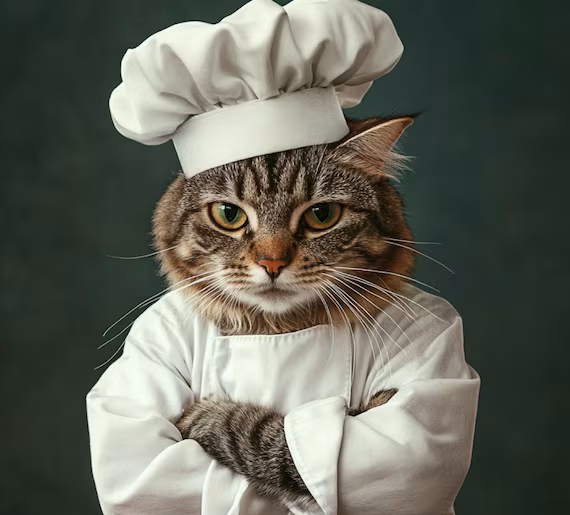
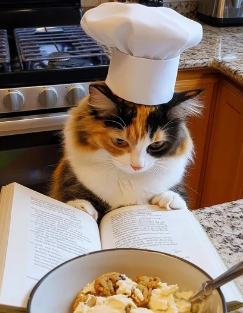
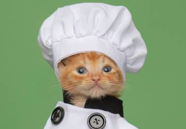

About Us
Welcome to the only restaurant where the chefs actively ignore health regulations.
From the streets
to the kitchen
Founded in 2017 by a group of highly motivated stray cats, SakeCat has become the city’s leading feline-operated dining experience.
Our chefs specialize in seafood cuisine, table intimidation, and occasional screaming at 3AM. Every dish is prepared with the finest ingredients and at least one paw directly inside the food.
We believe dining should be memorable, slightly chaotic, and smell faintly of tuna.
“Where every meal is chef-tested and occasionally bitten.”
Live footage from the SakeCat kitchen, Tuesday night service.
Our Values
Freshness
Every ingredient is sniffed extensively before use. If a chef walks away from it, so do we.
Chaos
The best meals emerge from creative disorder. Knocked glasses are part of the ambiance. Bring a poncho.
Integrity
Our chefs will stare at you with complete disdain. That's not rudeness — that's honesty.
Meet the Chefs
Each chef brings a unique set of skills, mostly related to fish and knocking things over.

Chef Biscuit
Executive Chef6 years of tuna experience and zero remorse. Speciality: screaming at sous-chefs and refusing to move off the counter.

Chef Whiskers
Pastry ChefTrained in Paris (the fire escape behind a patisserie). Famous for her allegedly hairball-free macarons.

Chef Purrkins
Sous ChefHandles the seafood section and is solely responsible for the 3AM screaming. He is not sorry.